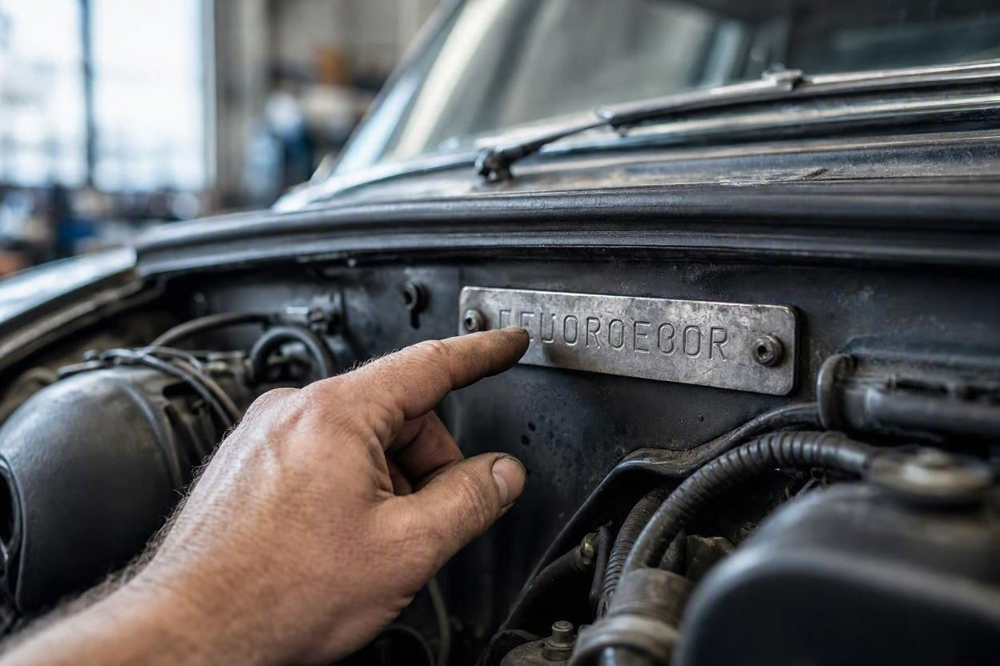
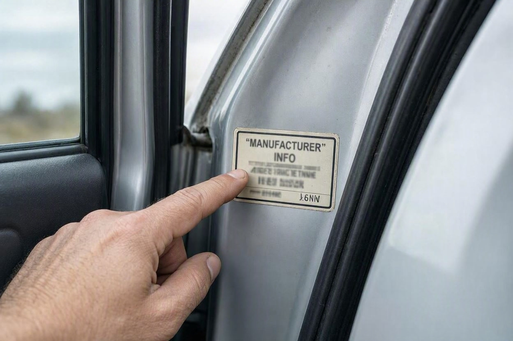
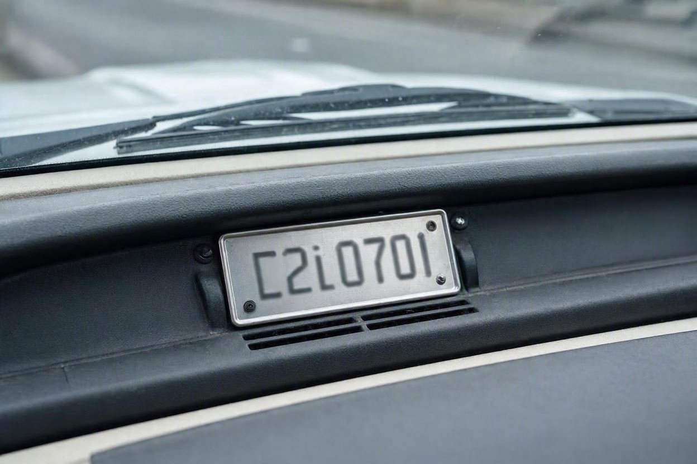
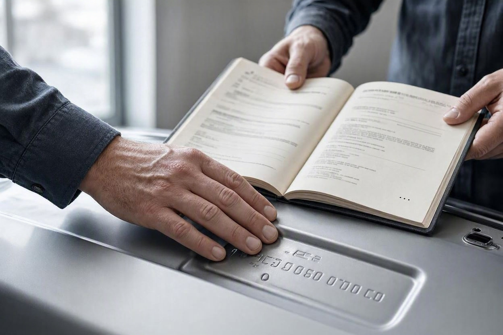

تفسیر کامل کد شاسی (VIN) خودرو؛ هر رقم یعنی چه؟
خیلی از خریدارها کد شاسی را فقط یک رشته عدد بیمعنی میبینند. اما همین کد، شناسنامه یکتای خودرو است و اگر بدانید چطور خوانده میشود، میتواند از یک معامله پرریسک جلویتان را بگیرد.
کد شاسی یا همان VIN، کدی است که هویت هر خودرو را مشخص میکند و روی بدنه، شیشه و مدارک ماشین ثبت میشود. شناختن ساختار آن به شما کمک میکند بفهمید هر بخش چه اطلاعاتی دارد و مهمتر از آن، متوجه شوید که آیا این کد در همهجای خودرو یکسان است یا دستکاری شده. اگر پیش از خرید میخواهید از اصالت خودرو مطمئن شوید، بررسی کارشناسی خودرو با کارماچک شامل تطبیق همین کدها هم میشود. در ادامه ساختار کامل کد شاسی را باز میکنیم و میگوییم برای خودروهای ایرانی چطور باید به آن نگاه کرد.
کد شاسی یا VIN یک کد ۱۷ کاراکتری استاندارد است که سه بخش دارد: شناسه سازنده (سه کاراکتر اول)، بخش توصیف خودرو (کاراکتر چهارم تا هشتم) و بخش شناسایی شامل رقم کنترلی، سال ساخت، محل تولید و شماره سریال. در خودروهای ایرانی جدید هم همین ساختار به کار میرود، اما معنی دقیق هر رقم به کدهای اختصاصی سازنده بستگی دارد و مطمئنترین راه، استعلام رسمی شماره شاسی است.
- کد شاسی استاندارد ۱۷ کاراکتر دارد و حروف I و O و Q در آن استفاده نمیشود تا با اعداد اشتباه نشود.
- سه کاراکتر اول سازنده و کشور، کاراکتر چهارم تا هشتم مشخصات خودرو را نشان میدهد.
- کاراکترهای پایانی به سال ساخت، محل تولید و شماره سریال مربوطاند.
- رمزگشایی دقیق هر رقم برای خودروهای ایرانی به کد سازنده نیاز دارد و بهتر است استعلام شود.
- مهمتر از معنی هر رقم، یکسان بودن کد شاسی در بدنه، شیشه و مدارک است.
کد شاسی یا VIN چیست؟
کد شاسی یعنی یک کد یکتا که فقط به یک خودرو تعلق دارد، مثل کد ملی برای انسان. در زبان فنی به آن VIN گفته میشود که کوتاهشده عبارت انگلیسی شماره شناسایی خودرو است. هیچ دو خودرویی کد شاسی کاملاً یکسان ندارند.
این کد در ساختار استاندارد جهانی از ۱۷ کاراکتر تشکیل شده که ترکیبی از حروف و اعداد است. برای جلوگیری از اشتباه، حروف I و O و Q در آن به کار نمیرود، چون شبیه اعداد ۱ و صفر هستند.
کد شاسی روی خودرو کجاست؟
کد شاسی معمولاً در چند نقطه روی خودرو ثبت میشود تا اصالت آن قابل بررسی باشد. رایجترین محلها:
- روی بدنه، اغلب در محفظه موتور یا کف صندوق و زیر فرش.
- پلاک یا برچسب روی چارچوب درِ راننده.
- پلاک کوچک روی داشبورد که از پایین شیشه جلو دیده میشود.
- در مدارک خودرو مثل سند، کارت و دفترچه.

نکته مهم این است که کد ثبتشده در همه این نقاط باید کاملاً یکسان باشد. اختلاف میان آنها میتواند نشانه دستکاری یا تعویض قطعه باشد.
ساختار ۱۷ کاراکتری کد شاسی
کد شاسی استاندارد به سه بخش اصلی تقسیم میشود. هر بخش دسته متفاوتی از اطلاعات را نگه میدارد:
- بخش اول، شناسه جهانی سازنده که کشور و شرکت تولیدکننده را مشخص میکند.
- بخش دوم، توصیف خودرو که به مدل، نوع بدنه و مشخصات فنی مربوط است.
- بخش سوم، بخش شناسایی که شامل رقم کنترلی، سال ساخت، محل تولید و شماره سریال است.
تفسیر بخشبهبخش هر رقم
در ساختار استاندارد، هر موقعیت از کد شاسی معنی مشخصی دارد. جدول زیر نگاه کلی به این موقعیتها میدهد:
| موقعیت | نام بخش | چه چیزی را نشان میدهد |
|---|---|---|
| ۱ تا ۳ | شناسه سازنده | کشور و شرکت تولیدکننده خودرو |
| ۴ تا ۸ | توصیف خودرو | مدل، نوع بدنه و مشخصات فنی |
| ۹ | رقم کنترلی | رقم بررسی صحت کد در برخی استانداردها |
| ۱۰ | سال ساخت | سال مدل خودرو با یک حرف یا رقم |
| ۱۱ | محل تولید | کارخانه یا خط تولید سازنده |
| ۱۲ تا ۱۷ | شماره سریال | شماره ترتیبی تولید همان خودرو |
سه کاراکتر اول: سازنده و کشور
این بخش نشان میدهد خودرو در کدام کشور و توسط کدام شرکت ساخته شده است. برای هر خودروساز، این کد ثابت و مشخص است.
کاراکتر چهارم تا هشتم: مشخصات خودرو
این بخش به مدل، نوع بدنه، نوع موتور و مواردی از این دست مربوط میشود. معنی دقیق هر کاراکتر بین سازندگان فرق دارد و بر اساس جدول اختصاصی همان شرکت تعریف میشود.
رقم نهم: رقم کنترلی
در بعضی استاندارها مثل استاندارد آمریکای شمالی، رقم نهم یک رقم کنترلی است که با فرمول محاسبه میشود و به تشخیص کد جعلی کمک میکند. این رقم در همه بازارها به یک شکل استفاده نمیشود.
رقم دهم: سال ساخت
موقعیت دهم سال مدل خودرو را نشان میدهد. در روش استاندارد بینالمللی، سالها با یک حرف یا رقم کدگذاری میشوند و این کد در دورههای چند ساله تکرار میشود. برای همین، سال ساخت را بهتر است در کنار مدارک و استعلام رسمی تأیید کنید، نه فقط از روی یک کاراکتر.
رقم یازدهم تا هفدهم: محل تولید و شماره سریال
رقم یازدهم معمولاً به کارخانه یا خط تولید مربوط است و شش رقم پایانی شماره ترتیبی تولید همان خودرو را نشان میدهد. این شماره سریال، همان چیزی است که خودرو را از خودروی مشابه بعدی جدا میکند.

کد شاسی خودروهای ایرانی چه فرقی دارد؟
خودروسازان ایرانی مثل ایران خودرو و سایپا در خودروهای جدید از همین ساختار ۱۷ کاراکتری پیروی میکنند. یعنی همان تقسیمبندی سازنده، توصیف خودرو و بخش شناسایی در آنها هم وجود دارد.
اما یک نکته مهم را صادقانه باید گفت: جدول دقیق معنی هر رقم برای هر مدل ایرانی، بهصورت عمومی و یکدست برای رمزگشایی دستی منتشر نشده و ممکن است بین مدلها و سالها فرق کند. در خودروهای خیلی قدیمی هم گاهی شماره شاسی ساختار متفاوتی دارد. برای همین بهجای حدس زدن معنی تکتک ارقام، بهتر است کد را استعلام کنید.
مهمتر از رمزگشایی: تطبیق و استعلام
برای یک خریدار، ارزش اصلی کد شاسی در معنی تکتک ارقام نیست. مهمتر این است که کد در همه نقاط خودرو و مدارک یکسان باشد و با استعلام رسمی بخواند. این کار نشانههای دستکاری، تعویض قطعه یا مشکل هویتی را آشکار میکند.
- پیدا کردن کد:کد شاسی را روی بدنه، برچسب درِ راننده و پلاک شیشه پیدا کنید.
- مقایسه با مدارک:همان کد را با سند، کارت و دفترچه خودرو تطبیق دهید.
- بررسی یکسان بودن:مطمئن شوید کد در همه نقاط دقیقاً یکسان است.
- استعلام رسمی:کد را از سامانهها و مراجع رسمی استعلام کنید تا اصالت و سوابق آن روشن شود.
اختلاف در کد شاسی یا ناخوانا بودن آن روی بدنه، از مهمترین نشانههای خطر است. کد شاسی ارتباط مستقیمی با سلامت سازه خودرو هم دارد؛ اگر میخواهید نشانههای ضربه و تعویض قطعات بدنه را کاملتر بشناسید، راهنمای تشخیص شاسی ضربه خورده خودرو کمککننده است.

پیش از معامله، اصالت خودرو را بررسی کنید
اگر درباره اصالت کد شاسی یا سوابق خودرو مطمئن نیستید، بررسی تخصصی میتواند ابهامهای معامله را کمتر کند.
شروع کارشناسی خودروکارماچک اینجا چه کمکی میکند
کارماچک خدمات کارشناسی خودرو را برای بررسی فنی، رنگ، بدنه و عوامل مؤثر بر ارزش معامله ارائه میدهد. فقط ایراد خودرو را شناسایی نمیکنیم؛ اثر آن روی هزینه تعمیر و ارزش واقعی معامله را هم مشخص میکنیم. اگر میخواهید اصالت کد شاسی و سلامت بدنه یکجا بررسی شود، میتوانید کارشناسی بدنه و شاسی خودرو را ثبت کنید. برای مرور کامل مواردی که باید پیش از خرید چک شوند هم چک لیست خرید خودرو دست دوم نقطه خوبی برای شروع است.
جمعبندی
کد شاسی خودرو یک رشته عدد بیمعنی نیست، بلکه شناسنامه یکتای ماشین است که در ساختار ۱۷ کاراکتری، سازنده، مشخصات خودرو، سال ساخت و شماره سریال را نگه میدارد. دانستن این ساختار خوب است، اما برای خودروهای ایرانی معنی دقیق هر رقم به کد سازنده بستگی دارد و بهتر است استعلام شود. در عمل، مهمترین کاری که یک خریدار باید انجام دهد، تطبیق کد شاسی در بدنه، شیشه و مدارک و استعلام رسمی آن است. همین یک بررسی ساده میتواند جلوی یک اشتباه بزرگ را بگیرد.
اصالت و سلامت خودرو را با هم بررسی کنید
پیش از خرید، تطبیق کد شاسی و وضعیت بدنه را با یک بررسی دقیق روشن کنید.
ثبت درخواست کارشناسیسؤالات متداول
کد شاسی خودرو چند رقم است؟
در ساختار استاندارد جهانی، کد شاسی یا VIN از ۱۷ کاراکتر تشکیل شده که ترکیبی از حروف و اعداد است. حروف I و O و Q در آن استفاده نمیشود تا با اعداد اشتباه نشود. خودروهای ایرانی جدید هم معمولاً از همین ساختار ۱۷ کاراکتری پیروی میکنند، اما بعضی خودروهای خیلی قدیمی ممکن است ساختار متفاوتی داشته باشند.
آیا میتوانم معنی هر رقم کد شاسی را خودم رمزگشایی کنم؟
ساختار کلی کد شاسی مشخص است، اما معنی دقیق هر رقم به جدول اختصاصی سازنده بستگی دارد که برای خودروهای ایرانی بهصورت عمومی و یکدست منتشر نشده. برای همین رمزگشایی دستی همیشه دقیق نیست و بهتر است کد را از مراجع رسمی استعلام کنید تا نتیجه معتبر باشد.
کد شاسی خودرو کجاست؟
کد شاسی معمولاً روی بدنه در محفظه موتور یا کف صندوق، روی برچسب چارچوب درِ راننده، روی پلاک داشبورد که از پایین شیشه جلو دیده میشود و در مدارک خودرو ثبت میشود. این کد باید در همه این نقاط دقیقاً یکسان باشد.
اختلاف در کد شاسی یعنی چه؟
اگر کد شاسی در نقاط مختلف خودرو یا در مدارک با هم فرق داشت یا روی بدنه ناخوانا بود، این میتواند نشانه دستکاری، تعویض قطعه یا مشکل هویتی باشد. در این حالت نباید معامله را ادامه داد و لازم است اصالت خودرو بهصورت تخصصی و با استعلام رسمی بررسی شود.
از روی کد شاسی میشود سال ساخت را فهمید؟
در ساختار استاندارد، یک موقعیت از کد به سال مدل مربوط است، اما این کد در دورههای چند ساله تکرار میشود و برای خودروهای ایرانی باید با احتیاط خوانده شود. مطمئنترین راه، تأیید سال ساخت از روی مدارک رسمی و استعلام است، نه فقط یک کاراکتر از کد.
استعلام کد شاسی جای کارشناسی خودرو را میگیرد؟
خیر. استعلام کد شاسی اصالت و بخشی از سوابق را روشن میکند، اما وضعیت فنی، رنگ و سلامت بدنه را نشان نمیدهد. برای تصمیم مطمئن، استعلام و کارشناسی خودرو مکمل هم هستند و هر کدام بخشی از تصویر واقعی خودرو را میسازند.